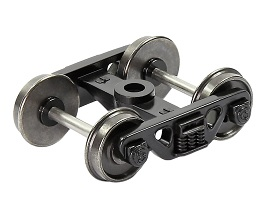
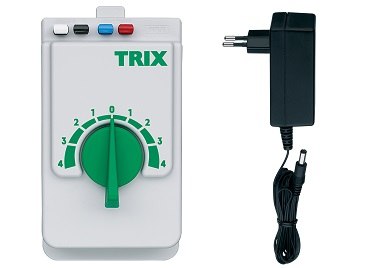
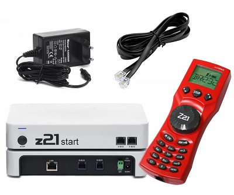
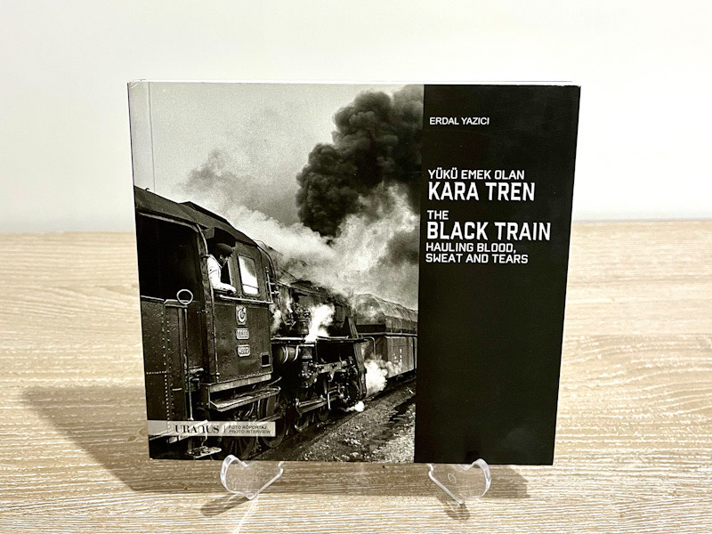
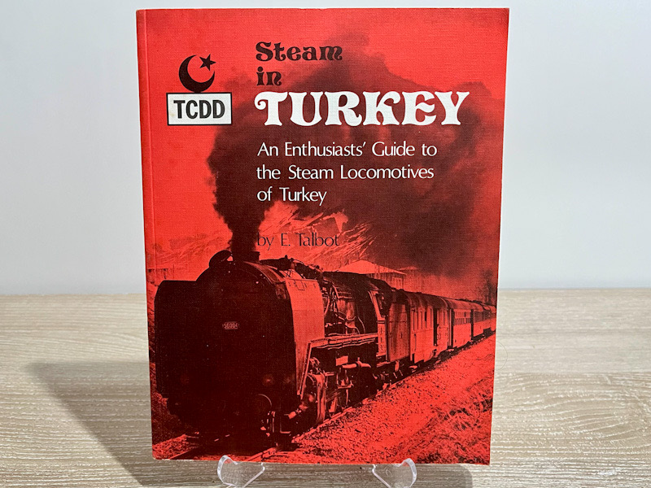
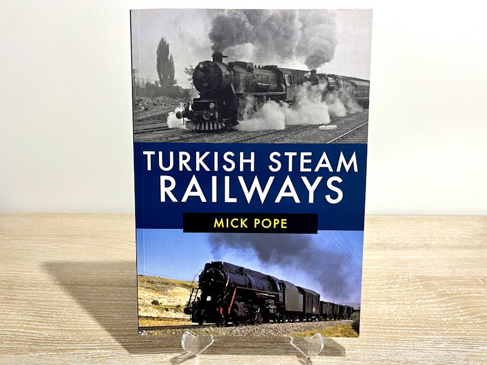
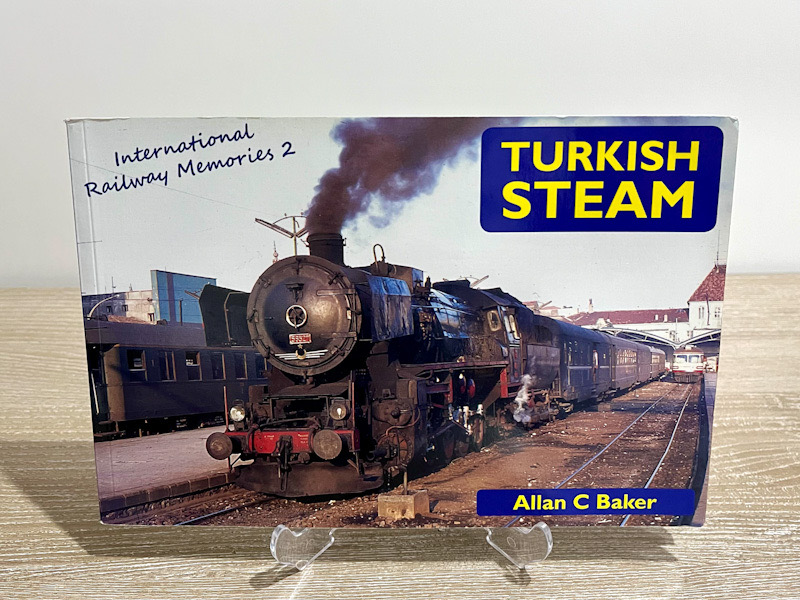
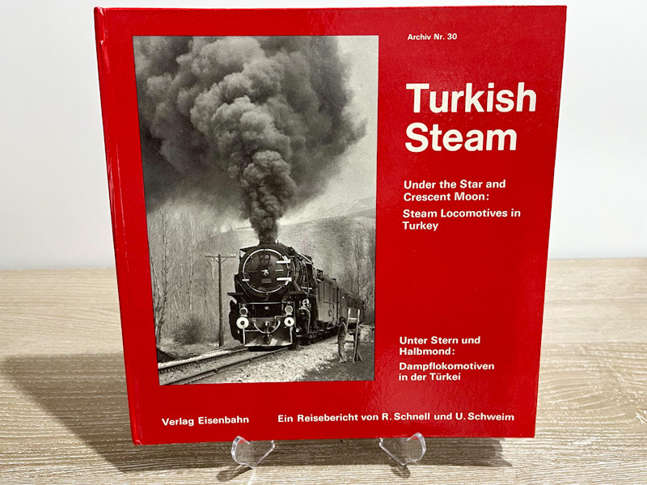

Scale Model Railroading Hobby
Scale model railroading is a hobby involving the replication of trains and railway systems at a reduced scale. This hobby is enjoyed by both children and adults alike. Model trains are manufactured in various scales, with the most common being 1/160, 1/120, 1/87, 1/76, and 1/64. The scale is determined by the ratio of the real train's size to the model's size. For example, a 1/87 scale train is 1/87th the size of the actual train. Model trains are produced from different materials such as plastic, metal, and wood, encompassing locomotives, wagons, and other rolling stock. These trains generally run on tracks made from plastic, metal, or wood. Model railroading is both a creative and relaxing hobby. Building and operating train models requires patience and craftsmanship, while displaying them is an art form in itself. It is a popular, fun, and educational hobby for people of all ages. Numerous resources, including books, magazines, websites, and model train clubs, are available to learn more about scale model railroading.
Gallery
This section features photos, images, and video content.
Highlights from Trenobi Youtube Channel


TCDD Logos
{kind=link}
{kind=link}
{kind=link}
Çerkeş Station
Çerkeş Railway Station is a historic train station located in the Çerkeş district of Çankırı province. Situated on one of Turkey's older railway lines, this station has served as an important transportation hub throughout history. Built in the early 20th century, the station contributed significantly to the economic and commercial development of the region.
The station stands out for its architecture. Reflecting a structure similar to early Republic era railway stations, it is an excellent example of classical Turkish railway architecture. The station building features a tiled roof and stone walls, mirroring the design trends of its period. Actively used for many years, the station provided great convenience for the transportation needs of Çerkeş and surrounding villages.
Today, Çerkeş Railway Station is primarily preserved and valued as a historical and cultural heritage site.
{kind=link}
{kind=link}
{kind=link}
{kind=link}
{kind=link}
{kind=link}
Equivalents of Wagons Used by TCDD
{kind=link}
{kind=link}
{kind=link}
{kind=link}
{kind=link}
{kind=link}
{kind=link}
{kind=link}
{kind=link}
{kind=link}
DB/DR/DRG/SBB Steam Locomotives
{kind=link}
{kind=link}
{kind=link}
{kind=link}
{kind=link}
{kind=link}
{kind=link}
{kind=link}
{kind=link}
{kind=link}
{kind=link}
Technical Information
Model Train Scales
Model trains are scaled-down replicas of real trains. Their dimensions are determined based on actual railway proportions and are commonly expressed as a ratio. For instance, a 1:87 scale model train is exactly 1/87th the size of the prototype train.
Model trains are manufactured in various scales. The most widespread model train scales include:
- 1:87 (H0)
- 1:160 (N)
- 1:220 (Z)
- 1:120 (TT)
- 1:148 (O)
- 1:20 (G)
The chosen scale determines several layout elements, including model dimensions, power configurations, track layouts, and compatible accessories. For example, a 1:87 scale train is noticeably larger than a 1:160 scale train, thus requiring larger tracks and more space for accessories.
Popularity of scales varies by region. For instance, the most common scale in the United States is 1:160 (N scale), whereas 1:87 (H0 scale) dominates the European market.
Key factors to consider when choosing a scale include the available layout space, budget, overall cost, and local availability of rolling stock and structures.
Model Train Brands and Manufacturers
Numerous model railroad brands and manufacturers operate globally. Some of the most popular brands include:
Each of these brands produces model trains in various scales with unique technical features. When selecting a brand or locomotive, factors such as layout parameters, track system compliance, system costs, and general availability should be evaluated.
What is a Bogie?
A bogie (or railroad truck) is the chassis or framework structure underneath a railway vehicle that holds the wheelsets and allows the train to follow rail tracks. It is a fundamental component of both wagons and locomotives.

Bogies consist of several crucial parts:
- Axle: The component holding and connecting the wheelsets together.
- Wheel: The part that provides motion and maintains contact on the rails.
- Spring: Absorbs the vibration and mechanical oscillations of the bogie.
- Shock Absorber / Damper: Dampens shocks to provide a smoother ride.
- Couplings and Pivot Pins: Components connecting the bogie structure to the wagon body or locomotive chassis.
Bogie selection depends directly on the vehicle's speed rating and payload capacity. They are categorized into several types:
- Single-axle bogies: Structures utilizing a single axle, commonly found on lighter rolling stock.
- Two-axle bogies: Comprising two axles, widely used for standard freight and passenger cars.
- Four-axle bogies: Incorporating four distinct axles, typically reserved for heavy duty freight layouts.
Model Train Control Systems
The type of electrical current used in model railroading determines how trains operate and are controlled.
There are two primary current systems: Direct Current (DC) and Alternating Current (AC). The key operational distinctions are:
- Track Configuration: In 2-rail systems, trains draw power directly from the two running rails. In 3-rail systems, power is drawn from a central stud/rail line while the outer rails serve as ground return.
- Current Type: 2-rail layouts traditionally run on Direct Current (DC). 3-rail setups typically utilize Alternating Current (AC).
- Speed and Direction Control: Traditional 2-rail layouts use analog rheostats, whereas 3-rail layouts frequently integrate digital controllers.
- Power Consumption: 2-rail layouts generally consume less power compared to heavy-duty 3-rail operations.
- Cost: 2-rail components and tracks are usually more budget-friendly and widely available.
2-Rail Systems
2-rail configurations are the most widely adopted standard in model railroading. The system is straightforward; one rail supplies positive voltage to the motor while the opposing rail completes the circuit loop. Polarity shifts dictate direction changes.
3-Rail Systems
3-rail layouts present a slightly more complex configuration but offer reliable electrical contact and avoid traditional polarity short-circuit issues on reverse loops. The center rail/stud acts as the primary power feeder, while the outer tracks complete the circuit loop.
Analog Control
This is the traditional control method where operators adjust a manual dial to regulate the overall voltage applied to the tracks. Speed varies with voltage, and all locomotives on the same block react simultaneously. While user-friendly and straightforward, it complicates independent control of multiple trains.

Digital Command Control (DCC)
DCC is the modern standard for advanced layout control. It utilizes a constant voltage signal carrying digital packets to individual locomotive mobile decoders. This allows operators to control speed, direction, lighting, sound profiles, and multi-train staging independently on the same stretch of track using throttles or computerized interfaces.

Key differences between Analog and Digital (DCC) Control:
Analog Control
- Controlled manually by adjusting variable track voltage.
- Speed and direction are set globally across the power block.
- Traditional, classic entry-level hobby method.
- Simple setup and straightforward wiring.
- Precise independent control of multiple locomotives is restricted.
Digital Control (DCC)
- Operated via digital packets sent over constant track power.
- Speed, direction, headlights, and sound functions are adjusted individually per decoder address.
- Advanced, modern hobby control solution.
- Enables highly complex and prototypical multi-train operations.
- Brings unparalleled realism and layout interactivity to the hobbyist.
Resources
Books
- Yükü Emek Olan Kara Tren - Author: Erdal Yazıcı

- Steam in Turkey: An Enthusiast's Guide to the Steam Locomotives of Turkey – 1 Sept. 1981 by E. Talbot

- Turkish Steam Railways – 15 July 2019 by Mick Pope

- Turkish Steam: 2 (International Railway Memories) – 12 May 2017 by Allan C Baker

- Turkish steam: Unter Stern und Halbmond, Dampflokomitiven in der Türkei (Under the star and crescent moon: Steam locomotives in Turkey) – 1 Jan. 1976 German edition by Schnell R. - Schweim U.

Useful Links
- Trains of Turkey
- Photos by Robin Lush
- TCDD Model Locomotives and Wagons
- Railway Dictionary
- TCDD Freight Car Guide
- Ergin TÖNÜK's Personal Web Site
- Youtube: bonusaga
- Youtube: Veli Uğur Şener Akademi
- Çamlık Open Air Steam Locomotive Museum
- TÜRASAŞ Museum Gallery
- TCDD Museums
- loks-aus-kiel
- Mikemorant Archive
Printable Contents
You can download printable structure and layout contents here.
About
This website was established to showcase, introduce, and support the scale model railroad hobby. Here, you can discover technical layout information, follow news, and stay updated on model railroading events.